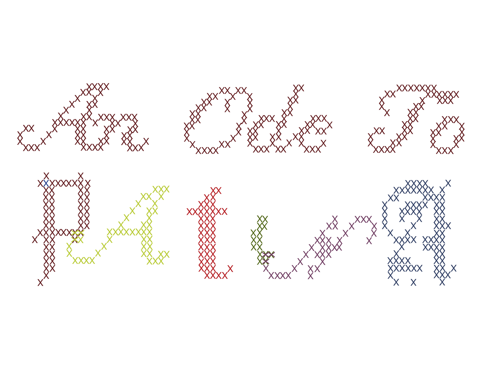

Worn in, not worn out
— on the dignity of aging garments
Unravelling the Service Lifespan of Garments
Vermeyen et al. — 2025
もったいない — The Word That Stops You Before You Throw Something Away
wabi-sabi.jp blog
They Give Moth Holes a Makeover
Emma Orlow
Environmental Impacts in the Fashion Industry
Kozlowski, Bardecki, Searcy
Wabi Sabi: The Japanese Art of Finding Beauty in Imperfection
The Enso
Article Six Title Goes Here
Author — Year